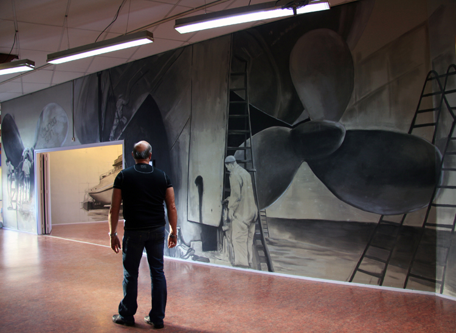
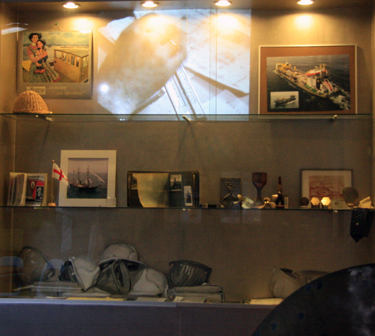
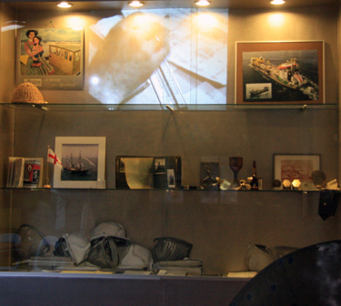

De Metaal; een work in progress bij kunstencentrum De Aleph in Drunen (gemeente Heusden)' (2012), over de opkomst, het verdwijnen en veranderen van de metaalindustrie in de gemeente Heusden.
Installatie bestaande uit monumentale muurschilderingen, verzameld materiaal (krantenknipsels, schroeven, boeken, metalen voorwerpen, relatiegeschenken etc.) afkomstig van (oud-)werknemers van metaalindustrie in de gemeente Heusden, geluidsopnames (interviews met betrokkenen), films.
Kijk in hoofdstuk 7 voor meer info en geluidsopnames over De Metaal in project 'In Tussentijd'. Klik hier: http://moniquebroekman.blogspot.nl/2013/09/hoofdstuk-7-de-metaal.html

 
